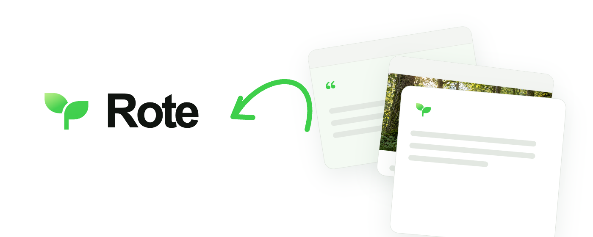

<!doctype html><html><meta charset="utf-8"><title>Rote 0.4.8 · 商店素材预览</title><style>*{box-sizing:border-box}body{margin:0;background:#eef1ec;color:#172016;font:16px/1.5 Arial,'PingFang SC',sans-serif}main{max-width:1344px;margin:auto;padding:28px 24px}header{display:flex;align-items:center;justify-content:space-between;margin-bottom:22px}header div{display:flex;align-items:center;gap:10px}h1{font-size:24px;margin:0}header img{width:40px}a{color:inherit}nav{display:flex;gap:20px}section{display:grid;grid-template-columns:1fr 1fr;gap:20px;margin-bottom:23px}figure{margin:0}figure img{display:block;width:100%;box-shadow:0 2px 9px #10251514}figcaption{font-size:14px;color:#64715f;margin-bottom:6px}.banner{display:grid;grid-template-columns:1fr 2fr;gap:25px;align-items:center}.banner img{max-width:100%;height:auto}footer{font-size:14px;color:#64715f;margin-top:20px}button{font:inherit;padding:5px 12px;border-radius:8px;border:1px solid #c4cfc0;background:white;cursor:pointer}</style><main><header><div><h1>Rote · Web Clipper / 0.4.8</h1></div><nav><a href="copy/zh-CN.txt">中文概述</a><a href="copy/en.txt">English overview</a><a href="copy/short-descriptions.json">短简介</a></nav></header><div id="gallery"></div><div class="banner"><figure><figcaption>共用宣传小图 · 440 × 280</figcaption><a href="promo/small.png"></a></figure><figure><figcaption>共用横幅 · 1400 × 560</figcaption><a href="promo/marquee.png"></a></figure></div><footer>点击图片查看原尺寸。功能示意与隔离演示数据，仅用于素材审阅；尚未上传 Chrome 商店。</footer></main><script>const names=['keep-what-matters','see-it-save-it','keep-this-passage','words-and-images','save-it-your-way'];document.querySelector('#gallery').innerHTML=names.map((n,i)=>`<section>${['zh-CN','en'].map(lang=>`<figure><figcaption>0${i+1} · ${lang==='en'?'English':'简体中文'} · 1280 × 800</figcaption><a href="${lang}/0${i+1}-${n}.png"></a></figure>`).join('')}</section>`).join('');</script></html>
